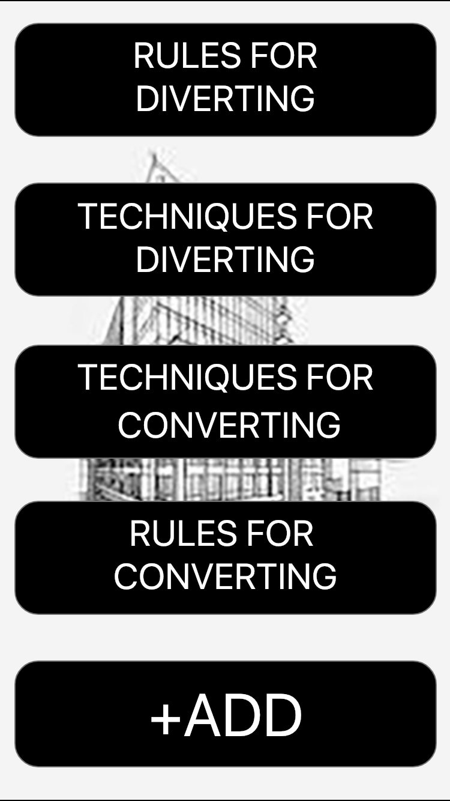
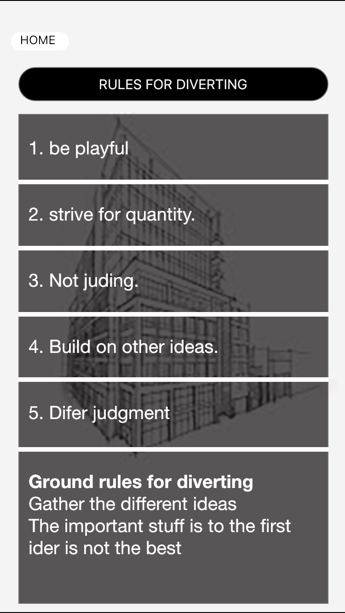
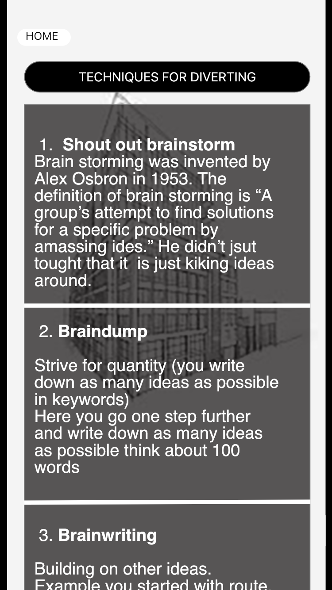
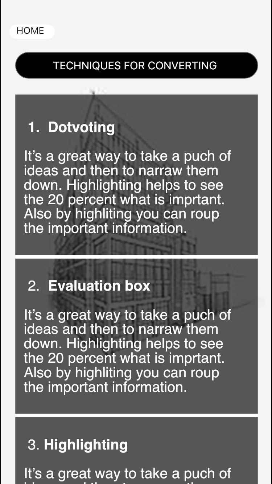
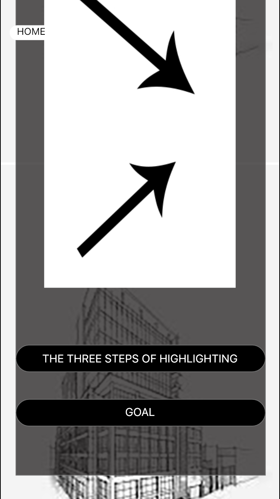

In this course, we had to do a prototype of an application.
The application was about the rules and techniques of
diverging and converging in design. So, my main goal
was that the application will be aesthetics also simple
to understand. The functionality of the prototype was
that if you use the app you can learn from that
application about diverting and converging rules and techniques.




